Welcome!
This page offers a deeper dive into my artistic process. It includes sketches that I've done in order to build certain skills and talents. It'll also include my personal thoughts and approaches for each sketch.
Sketching People
Ever since I started drawing, the human body has captured my attention. From the beginning of times, the human body has been the primary focus of artwork, regardless of the medium. Whether it be a bright painting like the Birth of Venus, a sculpture like Discobulus, or the image of a migrant mother; humans are at the forefront of art. Thus, it became very important for me to learn how to draw the human body. Some of these sketches were just simply me trying to figure out how to get proportions right, while the rest were me trying out different poses and muscle movements. Something that helped me was trying to sketch replicas of other artworks,a s this makes it easier to get the right proportions and figure out any mistakes I made. For these sketches, I based them off sculptures or artworks.
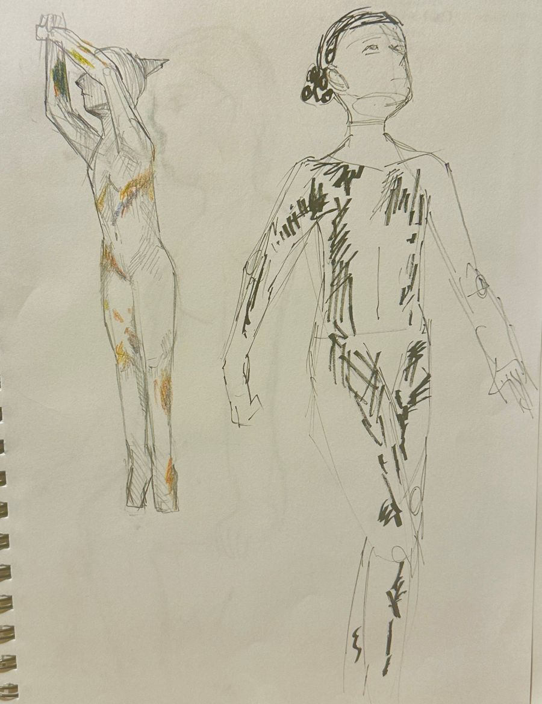
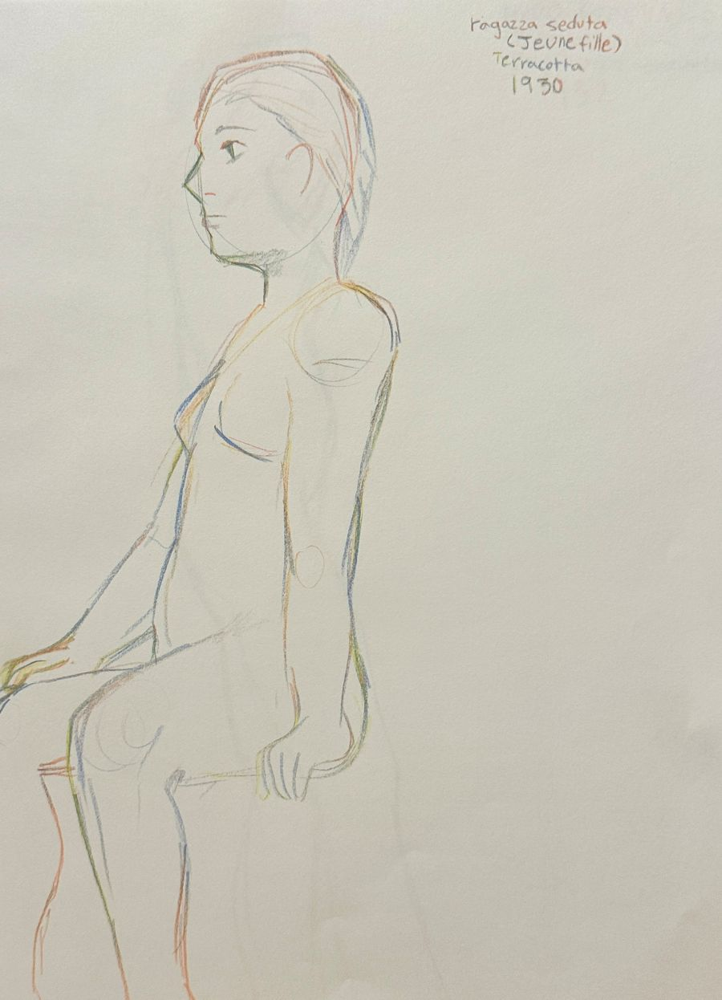
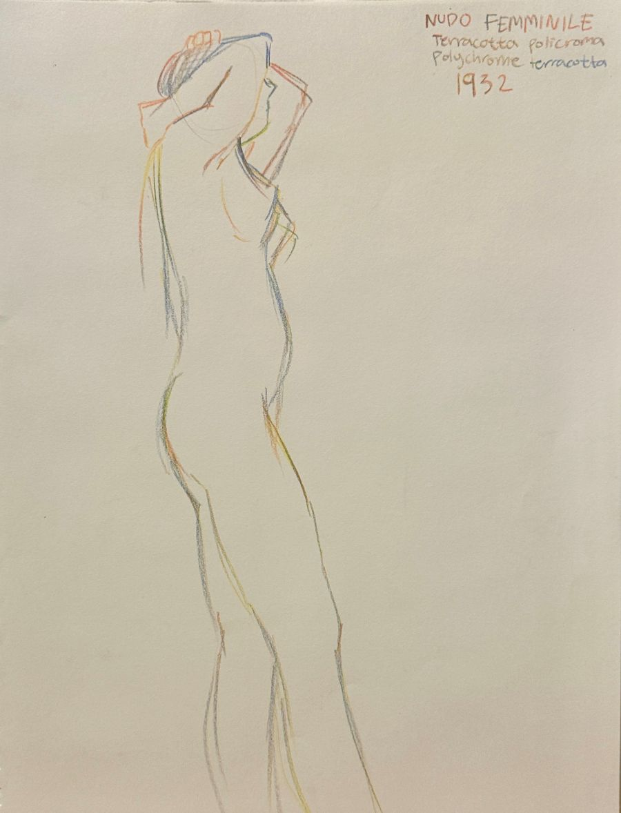
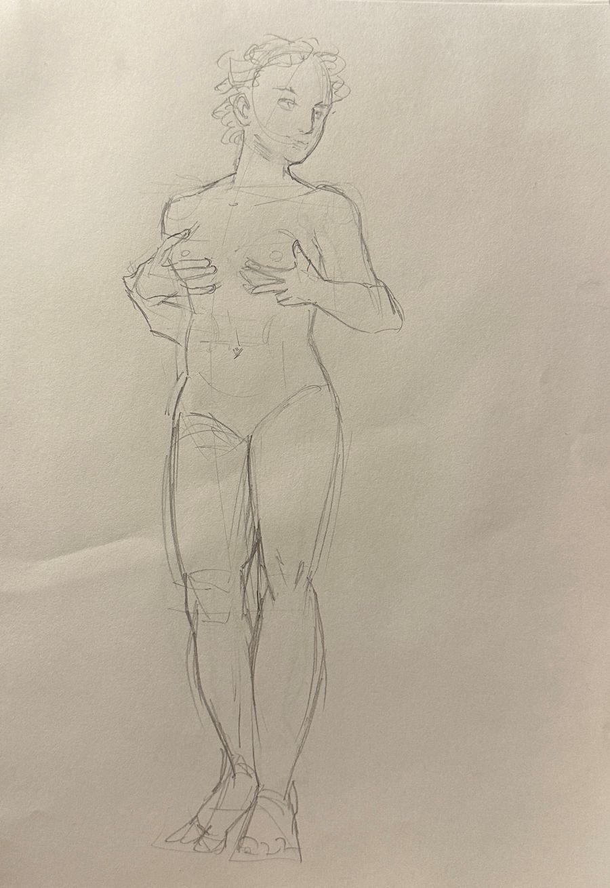
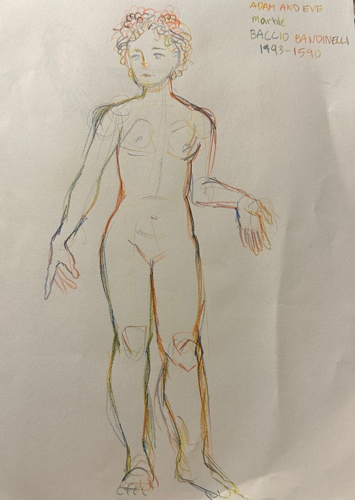
Sketching Hands
One of the most difficult parts about learning to draw people was getting the hands right. A practice I learned from one of my early teaches was to hold out your non-dominant hand and try drawing it. I held my hand in different positions and different amounts of light in order to practice shading and angling. I've come far enough where I can draw hands using my non-dominant hand.
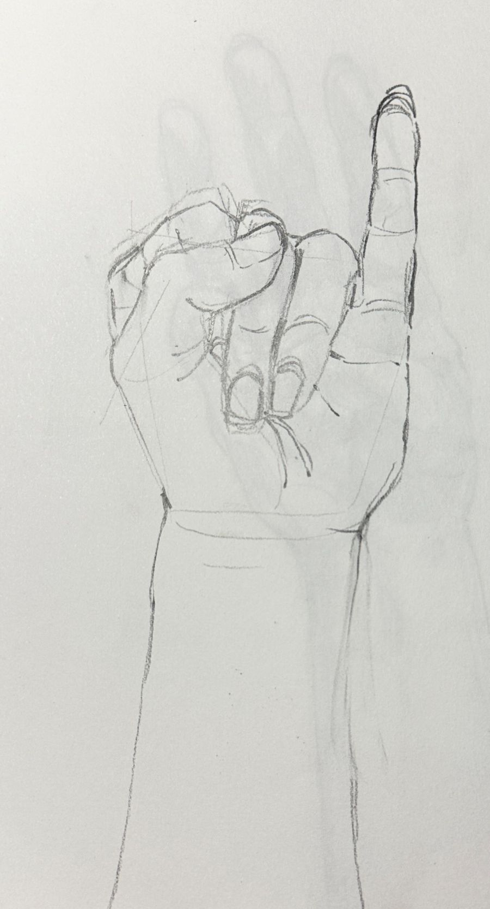
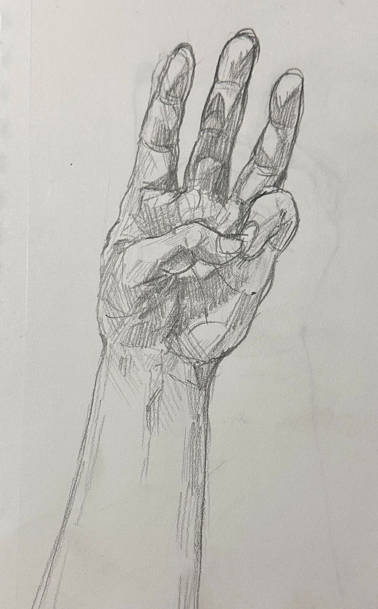
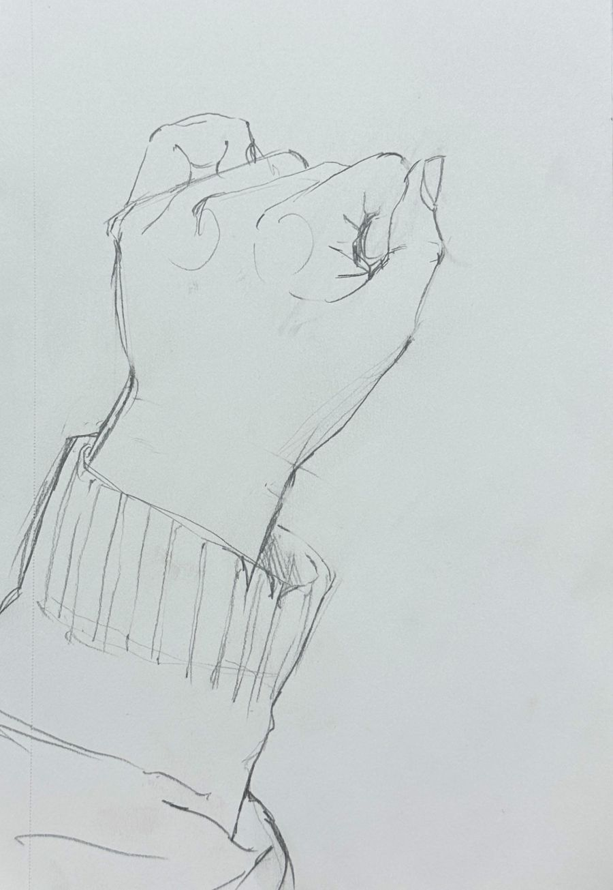
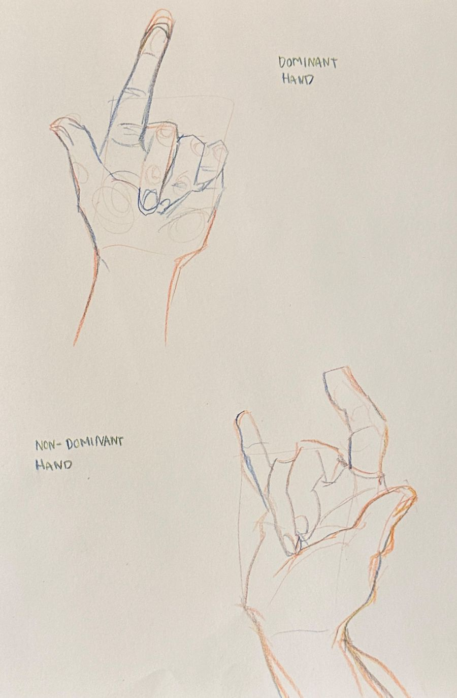
Fruit Sketches
A classic practice when you're first learning to draw is to draw pieces of fruit. These two sketches are of an apple and a pepper, both made using charcoal. Drawing ordinary items, like fruit, helps build shading skills. Charcoals are an especially helpful medium for shading because you're working with only one color and it's primarily controlled by the amount of pressure you put into the piece.
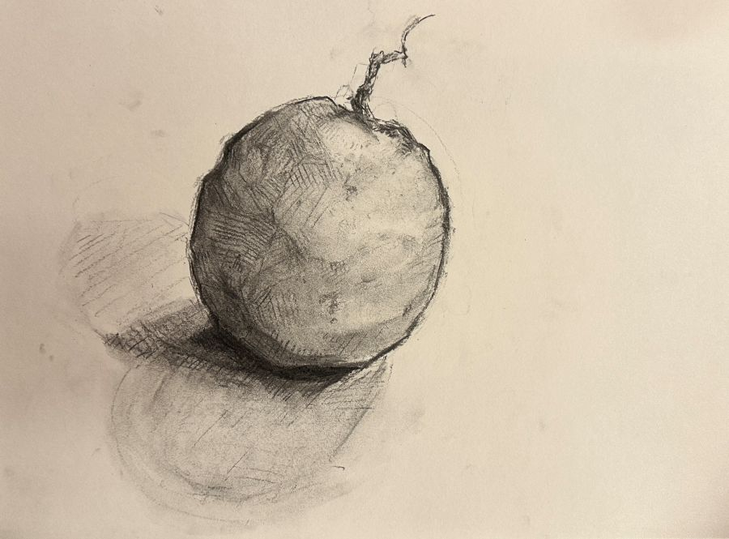
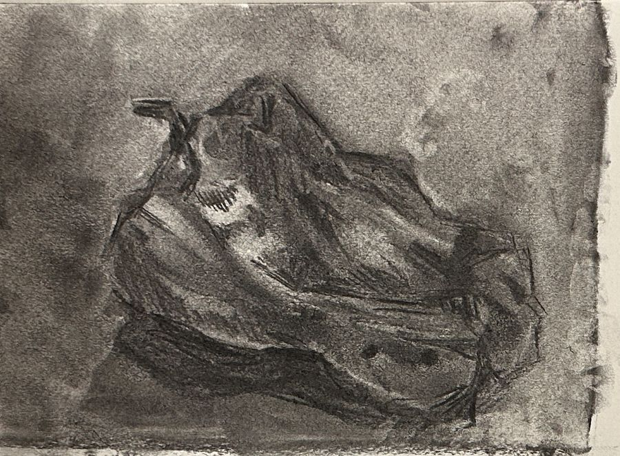
Different Art Styles
In these sketches, I practiced different art styles. Even though I tend to stick to realistic art styles, it's important to be able to apply other styles to your art. Every so often, I experiment with different styles. Sometimes I like them and stick with them for a little bit, but even if I don't like the style it's a great way to push your comfort zone and pick up new skills.
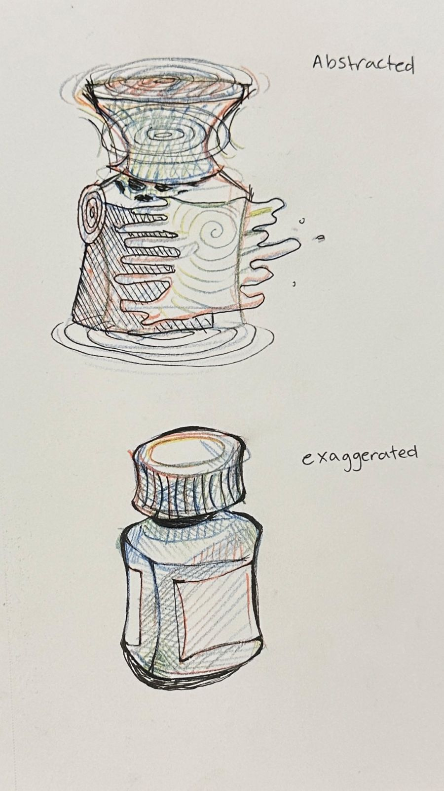
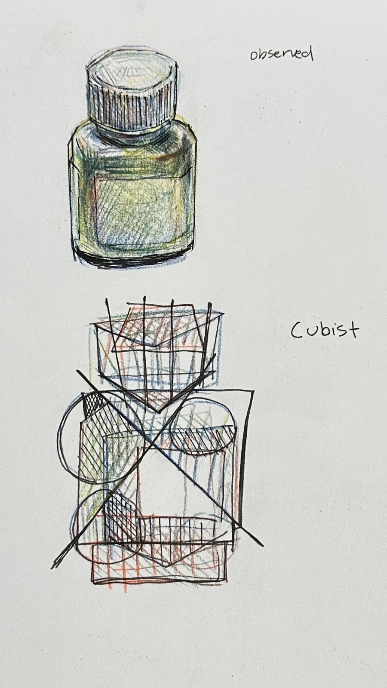
Other Sketches
Here are two other sketches that I've done. Before I create an art piece, I make sure to sketch it out. This way, I can get a sense of the shape, the position, and the shading.
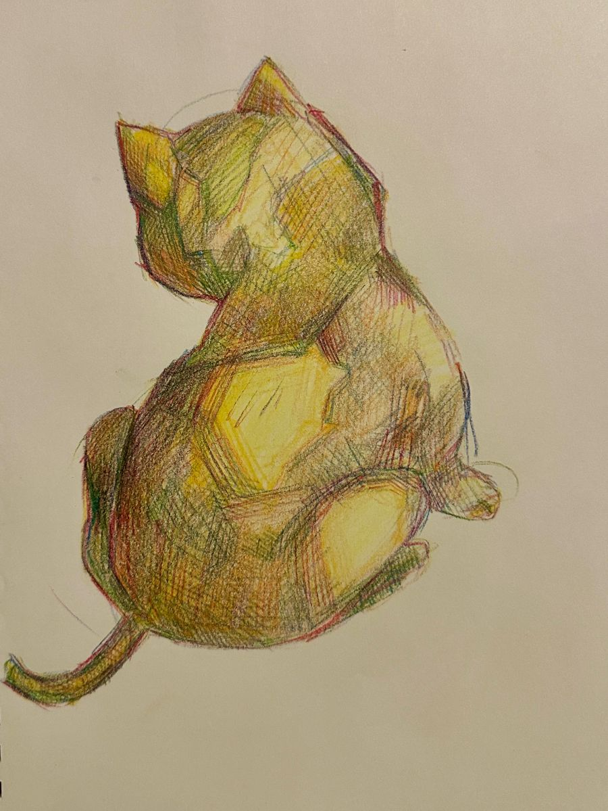
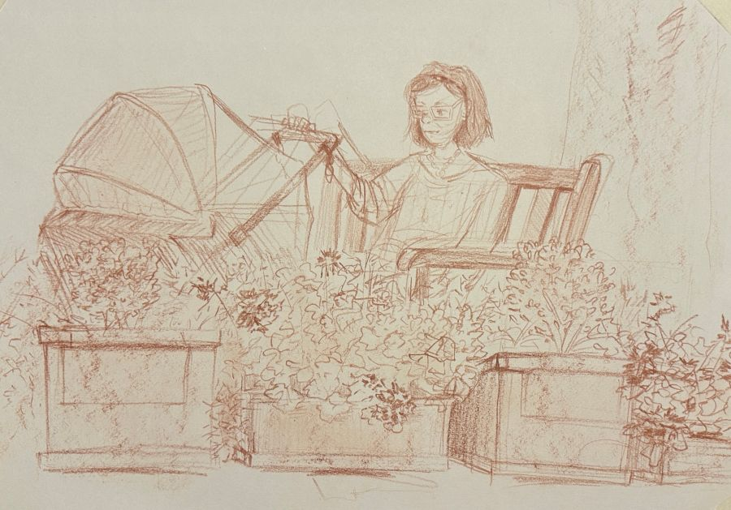